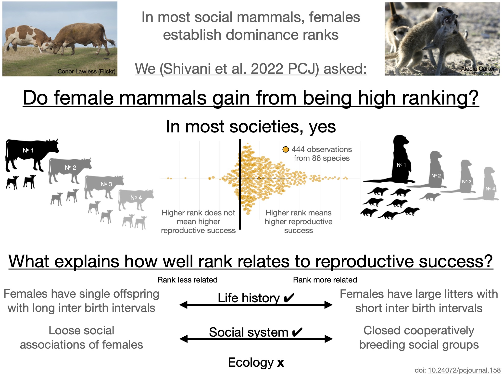

Causes and consequences of sociality

|
Dieter Lukas Causes and consequences of sociality |
|
| My
main site |
Blog:
press interactions |
Blog:
how to find data |
Blog:
resources |
| The
benefits of high rank Female mammals who hold a high social rank in their group have higher reproductive success Summary of our article: Shivani et al. (2022) The effect of dominance rank on female reproductive success in social mammals. doi: 10.24072/pcjournal.158

Living in social groups can create conflict over limited resources that are important to everyone in the group. In most social mammals, individuals arrange themselves in dominance hierarchies that govern access to resources while reducing open aggression. A new study new study by Shivani (Indian Institute of Science Education and Research Kolkata), Elise Huchard (Institut des Sciences de l’Évolution, Montpellier), and Dieter Lukas (Max Planck Institute for Evolutionary Anthropology) brings together evidence from various mammalian societies to show that differences in dominance ranks among females generally translate into inequalities in their reproductive success. Previous authors had argued for such an association between rank and reproductive success, but it was unclear how to reconcile existing data where authors had not found such an association. "We developed a series of predictions to assess when we would expect rank to lead to differences in reproductive success in females", says Shivani. "We checked these predictions by external reviewers, before testing them with comparative data from 86 different mammalian species". The researchers found that higher dominance rank can be linked to different measures of higher reproductive success. In particular, higher ranking females often have more and larger offspring, and they have shorter intervals between births compared to lower ranking ones. While the particular fitness link might differ depending on local conditions, dominant females appear better off in one way or another in almost all societies. In addition, high rank was found to be more strongly related to higher reproductive success in species in which females have large litters with short inter-birth intervals, while differences among females were not as pronounced when females only have single offspring at long intervals. Effects were also stronger in societies such as those of meerkats, where cooperatively breeding groups are closed to immigrants and females have strong social bonds including helping each other raise offspring. "Surprisingly though, dominance rank was not more important in harsh environments", says Huchard, "and the inequalities of having different social ranks also arise under conditions we would consider benign." The association between rank and reproductive success are far from perfect, and in most societies, all females, even the lowest-ranking ones, do reproduce. Nevertheless, even such small initial differences might have long-term consequences. Dominance rank is often inherited in matrilines, because daughters of dominant mothers often have better starting conditions plus might receive the support of their mother to obtain their own social position in the group. Benefits therefore can build up, potentially leading to large variation in the long-term growth of different matrilineal lineages. "Dominance structures are often reinforcing, and through inheritance high ranking females might not only themselves benefit from their position but also pass those privileges on to future generations", says Lukas. |
||